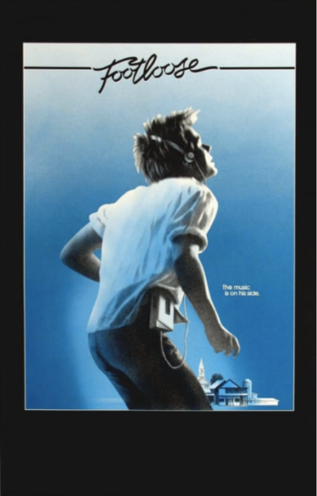

HE'S A BIG-CITY KID IN A SMALL TOWN. THEY SAID HE'D NEVER WIN. HE KNEW HE HAD TO.
PARAMOUNT PICTURES PRESENTS A DANIEL MELNICK PRODUCTION - A HERBERT ROSS FILM FOOTLOOSE - KEVIN BACON - LORI SINGER - DANNE WEST AND JOHN LITHGOW EXECUTIVE PRODUCER DANIEL MELNICK - EDITED BY PAUL HIRSCH - WIRTTEN BY DEAN PITCHFORD PRODUCED BY LEWIS I RACHTIL AND CRAIG ZADAN - DIRECTED BY HERBERT ROSS READ THE PAPERBACK FROM WALLABY BOOKS A PARAMOUNT PICTURE ORIGINAL MOTION PICTURE SOUNDTRACK ALBUM ON COLUMBIA RECORDS AND CASSETTES